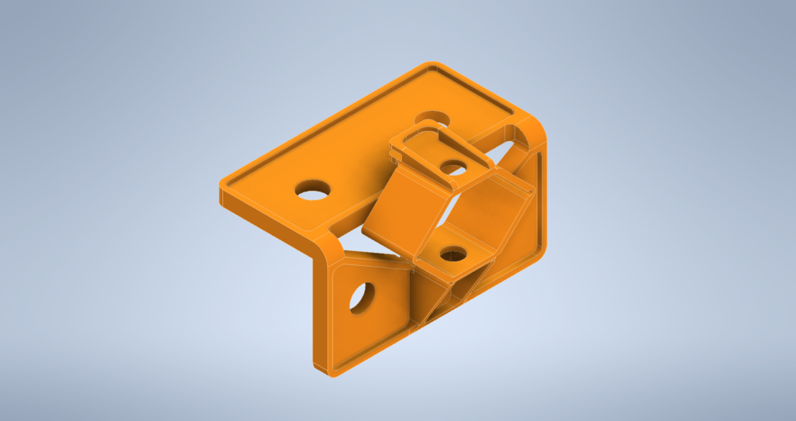

Hybrid Fabrication Machine HM01
Part 2 - Compliant Print Bed Supports
Austin Wells - March 3, 2021
Parts made to bend!
Background
From its conception, the HM01 was planned to have a highly modular z-plane with plenty of room for experimental print beds and work holding solutions. The first of these experiments is to be the inclusion of a compliant mechanism within the print bed support block. In theory, this should allow us to level the print bed more precisely than simply setting the z-axis lead screws.
What is a Compliant Mechanism?
A compliant mechanism is simply a flexible mechanism that takes advantage of elastic deformation to transmit force and/or m otion. We use compliant mechanisms every day in the form of side-releasing buckles, paper clips, and hair barrettes to name a few.
On a more technical level, the need for (potentially prolonged) elastic deformation of the part requires a considerable concentration of stress at the point of flexure, which can exacerbate fatigue of the part. Because of this, designers must be doubly aware of the mechanical properties of the material which they intend a part to be fabricated from. However, the fact that one part can potentially take the place of a complex assembly of springs, toggles, and levers presents a considerable advantage, especially when part and assembly cost are considered.
The Part
For the print bed support, I wanted to be able to adjust the offset (from the z-axis frame) and alignment by tightening or loosening an easily accessible screw. For this, I drafted up a simple hexagonal mechanisms capable of being squashed with relative ease by tightening a screw at the top to a nut at the bottom. The resistance provided by this squash mechanisms is achieved through the use of a compression spring in most 3d printers. In the interest of designing self-replicating machines, it makes sense to integrate this mechanism into the part itself, to avoid the requirement of a vitamin. Adding on a mounting bracket to the design while leaving room for the hexagon element to deform I got closer to something that might work. I then added two small tabs, between which the build plate would fit snuggly while installed in the printer.

left-to-right: model of spacer block v1, profile view of compliant mechanism, assembled mechanism


left-to-right: assembled mechanism, views of part installed on machine
A degree of consideration for print orientation had to be made as FDM components have variable strength and fatigue resistance depending on the alignment of layer lines and load. As a result, I printed the part with the front of the bracket aligned to the print bed. Although the inner face of the bracket side is rough, the part seems to function as intended and exhibits several millimeters compliance before the print bed tabs contact the top plate of the bracket (albeit with a decent degree of pressure from the screw).
Reflection and Plans
In future versions, I plan to include a greater number of joints to allow for less deformation per joint. That being said, the resistance of this design lend itself to being steadier during use. Additionally, integrating a limit switch into the bracket might allow for auto bed homing or an upper limit switch. The idea would be to detect when the bed is forced below its neutral plane by the tool.
On a more general note, the project still progresses in the gaps between course work. You will notice the power supply, control system, and several stepper cables in the picture of the whole system. I have been working to configure the firmware appropriately for the hardware, but nothing is ever as simple as it should be. Integrating the electrical systems has been its own process and I am constantly learning more about how best to implement design features. That being said, I see no deal-breaking hitches; no projects killers looming on the horizon.